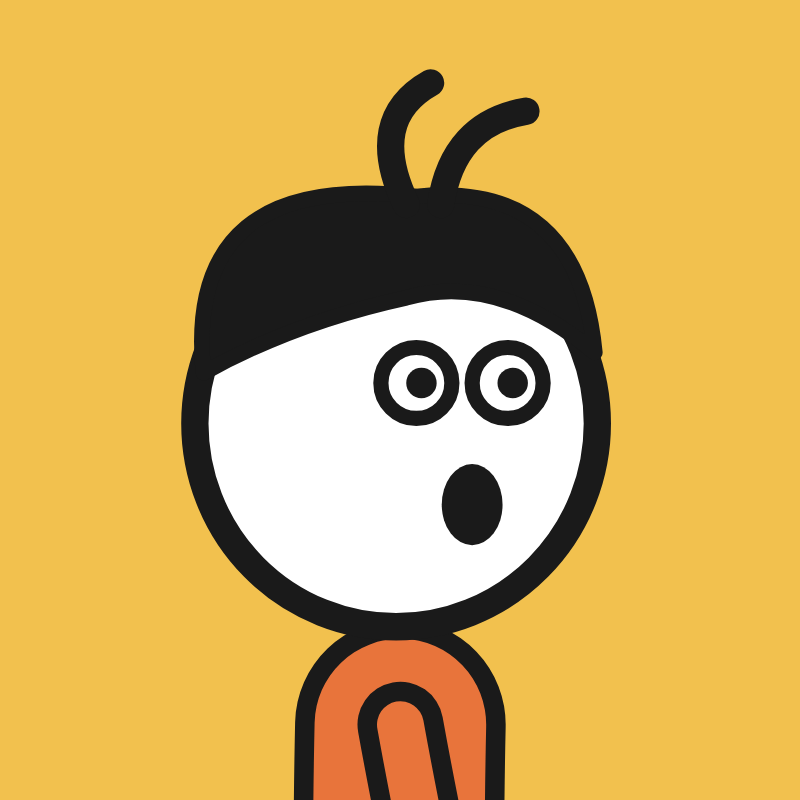

Qué Sería de Ti
Preguntas imposibles, respuestas reales.
¿Qué te pasaría si vivieras mil años? ¿Por qué Europa se comió a sus momias durante siglos? ¿Qué especie humana te ganaría en una pelea? En el canal respondemos preguntas así con ciencia e historia, contadas con monigotes. Cada video sale de una investigación con fuentes.
Videos nuevos martes y viernes.